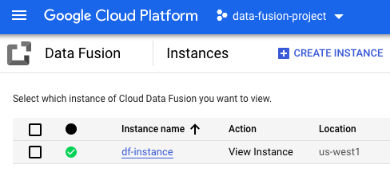
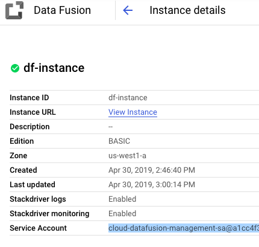
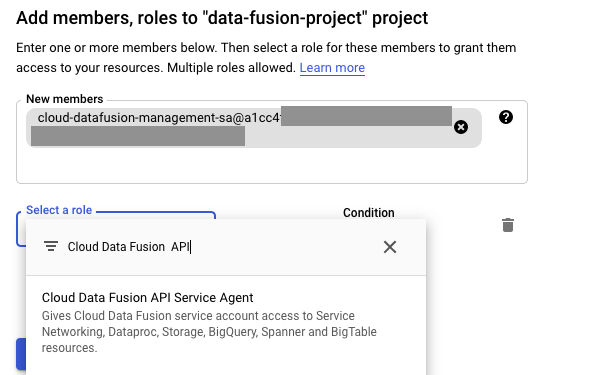

This demo shows you how to ingest, transform, explore and train ML model on without writing a single line of code. In this tutorial you will do the following:
Simplifying data migration and integration
Accelerating time to insights
Turning data into predictions
Prerequesites
Basic understaing of extraction, transformation and ingestion of data.
Basics of exploratory data analysis
Basics of supervised machine learning algorithms
In this tutorial we will build end to end ML pipeline from data ingestion to prediction using newly launched Google Cloud Analytics managed services. We are in the era where technology grow exponentially and it become very difficutlt to analyze and do prediction in very short span of time. Google comes up with very innnovative products that will help Data analyst, engineer and scientist to perfrom basic operations on just few click, abstracting the complexity of code.
From data ingestion to insight prediction: Google Cloud smart analytics accelerates your business transformation. Google introduced radically simple ways to move data into Google Cloud—and to clean, categorize, and understand it.
Case study This demo uses a publicly available dataset, Games of Thrones almost 2000 characters from the books to train a machine learing model to predict whether a character lives or dies. The model traning and performance is assessed using Google Cloud Auto ML, it shows a descent Accuracy of 75% indicating it can predict well whether a character lives or not based on the data.
What You'll Learn
How to extract, transform and ingest data from GCS to BigQuery using Cloud Data Fusion (beta)
How to perforom exploratory data analysis on processed data using BigQuery BI Engine (beta) and Data Studio
How analyze, train and evaluate ML model using Google Cloud AutoML (beta)
Cloud Data Fusion is a fully managed, cloud-native data integration service that helps users efficiently build and manage ETL/ELT data pipelines. With a graphical interface and a broad open-source library of preconfigured connectors and transformations, Data Fusion shifts an organization's focus away from code and integration to insights and action.
This section shows you how to do basic operations in Cloud Data Fusion using the Google Cloud Platform Console. You will create a Cloud Data Fusion pipeline that completes the following tasks:
Reads a csv file containing GOT character death prediction data from Google Cloud Storage
Runs basic transformations on the file to parse and clean the data
Create a Cloud Data Fusion instance. OPEN THE CREATE INSTANCE PAGE It takes up to 20 minutes to deploy Cloud Data Fusion. The instance creation process is completed when a green checkmark displays to the left of the instance name on the Instances page in the GCP Console.
When instance creation completes, grant permissions to the service account associated with the instance.
In the Instances page, under Instance name, click the name of your instance. 
In the Instance details page that opens up, copy the Service account value. 
In the left navigation menu, under IAM & Admin, navigate to the IAM page.
At the top of the IAM page, click Add.
In the Add members panel that opens, in the New members box, paste the service account that you copied.
Under Select a role, start typing Cloud Data Fusion API Service Agent. Click the Cloud Data Fusion API Service Agent role. ![
Click the name of the instance to see its details. The Instance Details page provides information, such as the Cloud Data Fusion graphical interface, the zone, networking configuration, labels and advanced configuration.
In the Actions column for the instance, click the View Instance link. The Cloud Data Fusion graphical interface opens.
Deploy sample pipeline for GOT dataset
Click and open Wrangler from dashboard.
Go to Create a pipeline then Batch Pipeline.
Click on Properties under GCSFile.
Fill the required details.
Goto Properties under Wrangler. Set columns name, datatypes and perfrom transformations on the dataset.
Goto Sink and select BigQuery.
Link Wrangler with BigQuery.
Goto Properties under BigQuery. Set Reference Name, Dataset, Table.
Set pipeline name and click Deploy.
View the pipeline
After the pipeline is deployed, Cloud Data Fusion displays the pipeline on the Pipeline Detail page:
View the pipeline's structure and configuration
Run the pipeline manually or set up a schedule or a trigger
View a summary of the pipeline's historical runs, including execution times, logs, and metrics
Execute your pipeline
To execute your pipeline, click Run in the Pipeline Detail view.
View the results
The pipeline takes a 10 minutes to complete. After pipeline completes, you can see the status of the pipeline transition to Succeeded and the number of records that each node in the pipeline has processed.
To view the results of the GOT pipeline, go to the BigQuery UI. The results of the pipeline are in the table, which is inside the GOT dataset in your project.
Google Data Studio visualize the data through highly configurable charts and tables. Easily connect to a variety of data sources. Share the insights with team or with the world. Collaborate on reports with team. Speed up the report creation process with built-in sample report
Steps to perform EDA on character prediction dataset and generate report
Under MY PROJECT, select GCP project where dataset is stored.
Select GOT dataset and character prediction table and Connect
Verfiy all the feature columns on the dashboard and click on CREATE REPORT
Start performing all the ECA and save reports for future use.
AutoML Tables enables team of data scientists, analysts, and developers to automatically build and deploy state-of-the-art machine learning models on structured data at massively increased speed and scale. Transform the business by leveraging enterprise data to tackle mission-critical tasks.
This product or feature is in a pre-release state and might change or have limited support. For more information, see Product launch stages.
This section walks you through the process of using AutoML Tables web application to do the following steps:
Create a dataset.
Import table data from BigQuery into the dataset.
Identify schema columns in the imported data.
Train a model from the imported data.
Use the model to make predictions.
The entire process takes a couple of hours to complete. Most of that time is not active time; you can close your browser window and return to the task later.
Before you begin
Create a project and enable AutoML Tables
In the GCP Console, go to the Manage resources page and select or create a project. GO TO MANAGE RESOURCE PAGE
Visit AutoML Tables in the Google Cloud Platform Console to begin the process of creating your dataset and training your model. GO TO THE AUTOML TABLES PAGE
Select Datasets, and then select New dataset.
Select Table from BigQuery and fill Project ID, dataset ID and table ID. The dataset import takes a few minutes to complete.
After the dataset import completes, select isAlive for the Target column. The target column identifies the value the model will be trained to predict. Click Continue.
After the statistics for dataset have refreshed, you can review and verify the statistics for the imported data. Click individual rows to see more about distribution and correlation for a specific feature.
Select the Train tab. Enter GOT_Character_Prediction_Model for Model name, and 1 for Training budget. Select input feature columns.
In the Summary section, click the Train button to train your model. Model training takes about two hours to complete. After the model is successfully trained, the Train tab shows high-level metrics for the model.
Select the Evaluate tab for a detailed view of the model evaluation metrics.
Select the Predict tab, and click Online prediction.
Click Deploy model to deploy the model. You must deploy your model before you can request online predictions. Deploying a model takes a few minutes to complete.
AutoML Tables fills in sample data to help you test your model. Click PREDICT to request the online prediction.
Clean up all the resources
Delete the BigQuery dataset and Cloud Data Fusion instance.
Delete the reports from Google Cloud Data Studio.
Undeploy ML model. Select Models and click on the model you want to undeploy. Select the Predict tab and click Online prediction. Click Remove deployment.
Delete ML model. To delete a model, select Models. Click the More actions menu for the model that you want to delete, and then select Delete model.
Delete the dataset, select Datasets. Click the More actions menu for the model that you want to delete, and then select Delete dataset.
If there is no need to GCP prjoect, then delete the project.